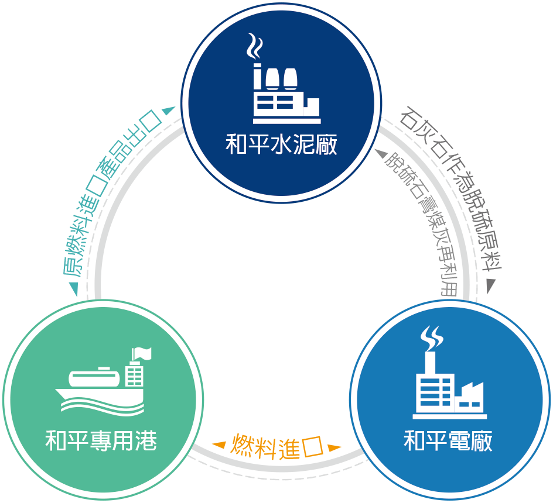
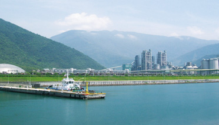
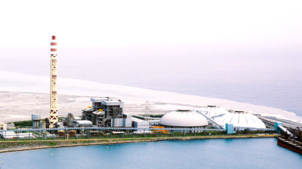

港廠電合一
「水泥＋發電＋環保」三合一運作模式

台泥因應西部礦權屆期及配合政府水泥業東移政策，進行和平水泥專業區投資計畫包含：
- 和平水泥廠一、二號窯生產系統完工投產，使得台泥水泥產能躍升至每年1,000萬噸以上。
- 為有效減少蘇花公路之運輸負荷及環境污染，投資開發和平工業區專用港，提供和平水泥專業區內各廠商各種物料之進出口裝卸業務。
- 因應未來東部地區用電需求，有效紓解北部用電不足窘境，台泥與香港「中電國際公司」合資成立「和平電力公司」，打造世界水泥工業獨特的「水泥＋發電＋環保」三合一運作模式。和平電廠於燃煤製程時，所產生之煤灰可做為水泥原料；水泥製程中產製之石灰粉，可用於電廠做為脫硫原料；脫硫產出之脫硫石膏亦可做為水泥生產添加成分之一。
和平水泥廠

和平水泥廠於建廠規畫時，採用最先進之環保設備，如兼顧景觀與環保之全密閉式儲存及輸送系統、Low-NOx製程與設備。另於主要排氣煙囪設置CEMS自動連續監測系統，嚴格控制排氣品質，確保所有排放均優於國家標準。此外，廠區鄰近太魯閣國家公園，配合國家公園景觀，設置達20公頃之景觀公園，以達水泥廠公園化之目標。
和平水泥廠一期建廠工程包括一、二號窯，每套日產8,600公噸水泥熟料，年設備產能達到540萬公噸。全面採用最先進之附煆燒爐之懸浮預熱式生產系統，有效達到節能、提高產能及環保之綠色生產。另設有一套發電能力31,500KWH之餘熱發電系統，一、二號窯同時運轉時，可產生粗發電量達21,300KW以上。
石灰石由和平水泥廠所屬的和平石礦供應，該礦採用最先進之「山頂平臺式階段開採豎井運輸法」開採，不但破壞面積小，對於景觀與環保衝擊較低，且具有安全性高、產能大、運輸成本低等特點。該礦目前共有三套豎井開採系統，年產能達1,500萬噸，除供應和平廠之外，還能供應蘇澳廠及花蓮廠生產所需。
和平專用港
設置水泥專用碼頭、卸煤碼頭及多用途碼頭等四座，可作為8萬噸級以下船舶進出口裝卸之用，總吞吐量達2,300萬噸。提供和平專業區內各廠商使用，可降低運輸成本，增加市場競爭力，亦可促進地方繁榮，創造就業機會。
和平專用港環保經費耗資近千萬元，購買洗潔船負責港區水域漂流物及垃圾之清理工作，同時還分區進行港區植栽綠化工程，以達”綠化港”之目標。港區儲運系統係採密閉式廊道輸送帶設計以減少物料粉塵溢散，碼頭則設置自動裝卸料機具降低港區貨運流量，減少空氣污染。和平廠之外，還能供應蘇澳廠及花蓮廠生產所需。
和平火力發電廠
和平火力發電廠配置兩組660MW裝置容量燃煤汽力發電機組，採用最佳製程技術與設置完善污染防治設備。採用密閉式燃煤儲運系統、靜電集塵器、排煙脫硫設備、選擇性觸媒轉化器脫硝設備、低氮氧化物燃燒器及自動連續監測系統等多項最先進之空氣污染防治設備，有效控制煙囪排放硫氣化物及氮氧化物之濃度，達國內法規高標準之門檻，達到資源全部再利用之目的。

於發電過程中產生之廢棄物為煤灰，包括飛灰與底灰兩種物質。較重的塵粒會於鍋爐下方排出，稱為底灰；較輕的塵粒則會被煙氣攜帶至靜電集塵設備（ESP），藉由高壓直流電將其吸附於集塵板上以淨化煙氣，收集到的塵粒稱為飛灰。
飛灰可添加於混凝土改善工程，如水壩工程中添加飛灰可避免混凝土龜裂，強化壩體結構強度；河海、橋樑及隧道工程摻入飛灰，可提高抵抗海水或土壤中鹽類侵蝕。飛灰也可與水泥直接混合使用，取代部分水泥，減少水泥使用量。底灰顆粒較粗，形狀多角且表面有孔隙，可用於工程填地、製磚、人工骨材及建材使用。
目前國內處置煤灰方式，主要是將其使用於混凝土添加劑，或以水力回填方式於鄰近發電廠之海邊築造灰塘，可做為擴建廠區用地。台泥做法則是將電廠產生之煤灰全部供做和平水泥廠生產水泥之原料，避免造成海洋污染。和平火力發電廠每年約產生420,000公噸煤灰，全數做為和平水泥廠水泥製造原料。
和平水泥廠可供應和平火力發電廠電廠排煙脫硫設備（FGD）所需之石灰石粉，藉由高濃度石灰石溶液沖洗，將煙氣中二氧化硫與石灰石作用，產生亞硫酸鈣、亞硫酸鈣與氧化而成的硫酸鈣，即為脫硫石膏，可做為水泥緩凝劑之用。